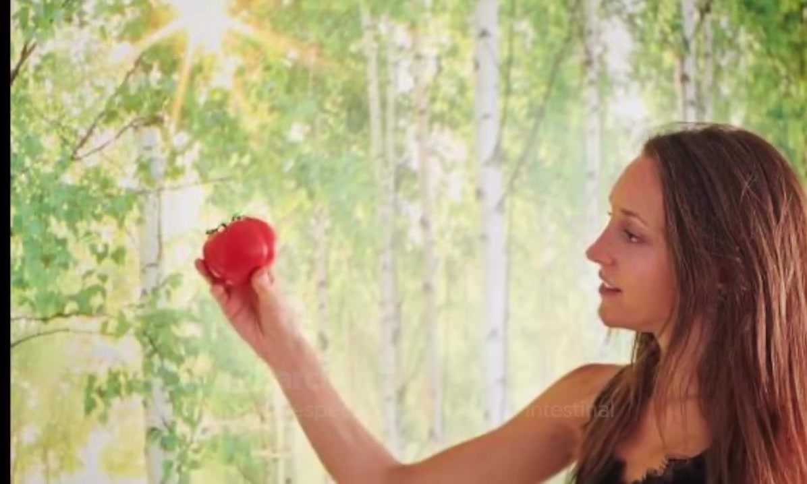
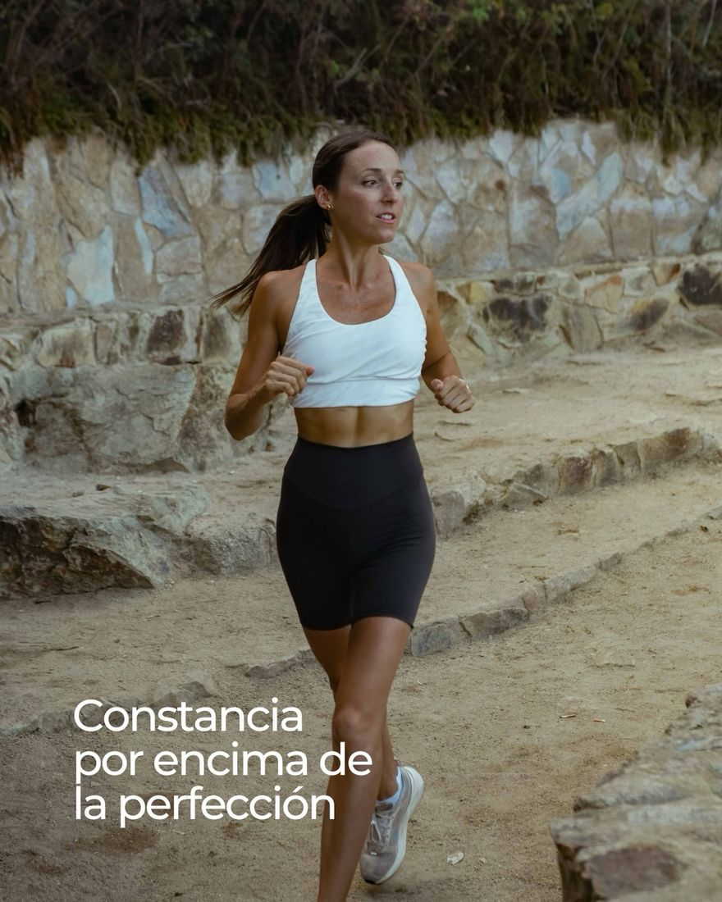

Nutricionista integrativa · Lloret de Mar
Logra tus objetivos sin perder la cabeza.
Sin dietas milagro ni contar calorías. Comida real, hábitos que se quedan y una microbiota que te lo agradece. Especializada en salud intestinal y nutrición deportiva.
¿Qué te trae por aquí?
Elige un objetivo y te cuento cómo lo trabajamos.
Ver más →
Mi enfoque
No creo en las dietas milagro. Creo en el placer de la comida real.
Soy Carla, dietista-nutricionista con enfoque integrativo (PNIE). Trabajo la salud intestinal y la microbiota, la nutrición deportiva y el cambio de hábitos, mirando a la persona entera: lo que comes, cómo duermes, cómo te mueves y cómo te sientes.
“El hecho de sentir que algo no te sienta bien y eliminarlo no está solucionando realmente el problema.”
Carla Pitarch · en el podcast de Fit Generation
- 01Salud digestiva y microbiota
- 02Nutrición deportiva
- 03Pérdida de grasa sin castigos
- 04Hábitos que se quedan
Colaboro con Clínica Bofill, Osana Centre y Policlínic Lloret.
Juego · Nutri mitos
¿Mito o realidad?
Nueve frases que escuchamos cada día. Decide si son mito o realidad y descubre qué hay detrás, con lo que cuento en mis reels y posts.
Herramienta · plato real
Construye tu plato.
“Verdura, proteína, un carbohidrato de calidad y aquello que te haga disfrutar del momento. Así de sencillo puede ser cuidarse.” Toca los alimentos para añadirlos al plato (y tócalos en el plato para quitarlos).
Reels & podcast
Dale al play y desmontamos mitos.
Aprende en 1 minuto · carruseles de Instagram
Desliza y aprende.
Cómo trabajamos
Tu proceso, paso a paso.
- 1Primera consulta
Te escucho: tu historia, tus síntomas, tus analíticas, tus horarios y lo que te gusta comer.
- 2Plan a tu medida
Pautas realistas, sin prohibiciones absurdas. Adaptadas a tu entrenamiento, tu digestión y tu vida.
- 3Seguimiento
Lo vamos ajustando en cada revisión. Constancia por encima de la perfección.

Consulta en Lloret de Mar
Av. Vila de Blanes, 136 · 17310 Lloret de Mar